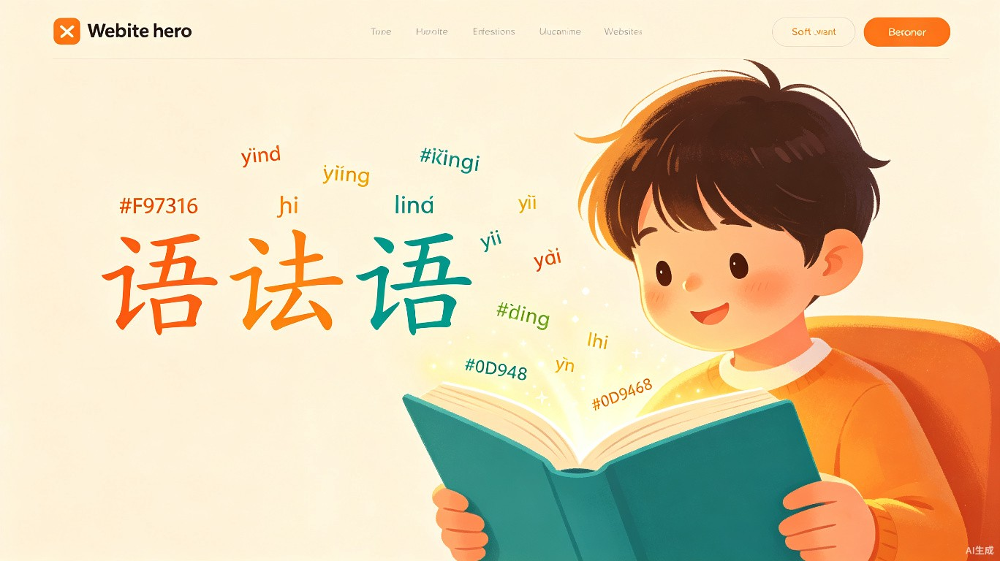

为文章段落自动标注拼音，AI 语音朗读辅助阅读
让每一个汉字都能被轻松读出
智能拼音标注器是一款面向中文阅读障碍群体的辅助工具，通过 AI 自动注音与语音合成技术，让阅读不再困难。
中国有超过 2.8 亿 的低识字率人群，其中包括正处在识字阶段的儿童、逐渐老化的老年群体，以及正在学习中文的外国学生。他们在阅读中文文章时，最常遇到的障碍就是——"这个字怎么读？"
智能拼音标注器正是为解决这一问题而设计。用户只需将任意中文段落粘贴到工具中，系统会自动为每个汉字标注准确的拼音，并以直观的上下对照方式展示。同时，用户可以点击任意字词或一键让 AI 朗读整段内容，实现"看拼音 + 听发音"的双重辅助。
不同于传统的纸质注音读物，本工具能够处理 任意文本——新闻、故事、课本、通知——做到即时注音、即时朗读，大大降低了阅读门槛。
我们的核心用户分为三大群体，他们在阅读中文时面临着各自独特的困难。
正处在识字关键期，大量生字生词阻挡了独立阅读的步伐。
识字基础薄弱或因年龄退化导致辨识能力下降，日常阅读困难。
中文是公认最难学的语言之一，拼音辅助是初学者必不可少的拐杖。
这款工具不仅仅是一个技术产品，更是一种社会关怀——用 AI 弥合阅读鸿沟，让人人都能平等地获取文字信息。
降低阅读门槛后，儿童可以更早开始独立阅读课外书籍，老年人也能重新享受阅读新闻、文章的乐趣。长期来看，有助于提升整体国民识字率和文化素养。
老年人在数字化时代中往往被边缘化。通过智能拼音标注，手机上的文字、医院的电子通知、社交媒体的消息都变得可读，帮助他们重新连接信息社会。
全球有超过 2500 万中文学习者。提供即时拼音标注和 AI 朗读的工具，能极大降低初学者的入门难度，让中文学习更加友好、高效。
以下是我们精心设计的功能界面演示，展示用户将如何与智能拼音标注器交互。
将任意中文段落粘贴到输入区域，支持整篇文章处理
AI 引擎自动识别汉字并标注准确拼音，支持多音字智能消歧
点击任意字词听发音，或一键让 AI 朗读整段，支持语速调节
导出为图片或 PDF，方便打印、分享给家人和老师
智能拼音标注器，用 AI 技术为每一个人打开文字世界的大门。